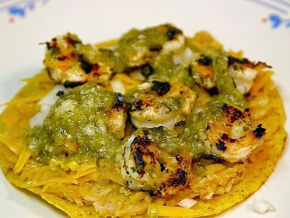

Back to Home
Tostadas

Note: This image is from Google and does NOT represent the actual dish. LOL.
Description
This is a lunch item I used to make a lot. The key components are the torn pieces of roasted chicken from the grocery store, and some other yummies dropped onto a corn tortilla and fried in a nonstick pan.
The tricky part is the chicken--since I buy a whole roast chicken and keep it in the fridge, it requires the initial prep of tearing the chicken apart, and then you have to use the torn chicken before it goes bad in the fridge.
Ingredients
- corn tortillas
- refried beans (canned)
- chicken - buy whole roasted chicken from Star. Use vinyl gloves and pull apart, store in square tupperware
- jalapeno - buy fresh from Trader Joe's. slice with chef's knife
- sprinkle cumin
- shredded cheese
- baby carrots
Steps
- Start heating a small amount of oil in a nonstick pan. Heat=1.5
- Spread small amount of refried beans on 3 tortillas.
- Add other toppings: cumin, chicken, peppers
- Add to pan, sliding around to coat with oil, and adding more oil as needed
- Sprinkle cheese over top in pan. any that spills off is free frico!
- Add 5-6 baby carrots
Back to Home